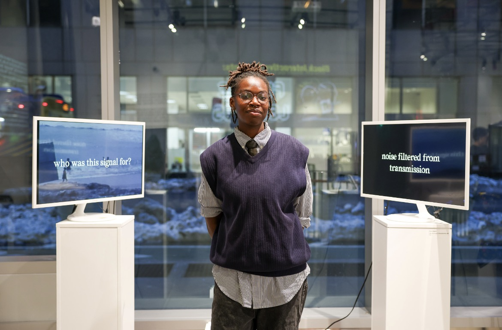
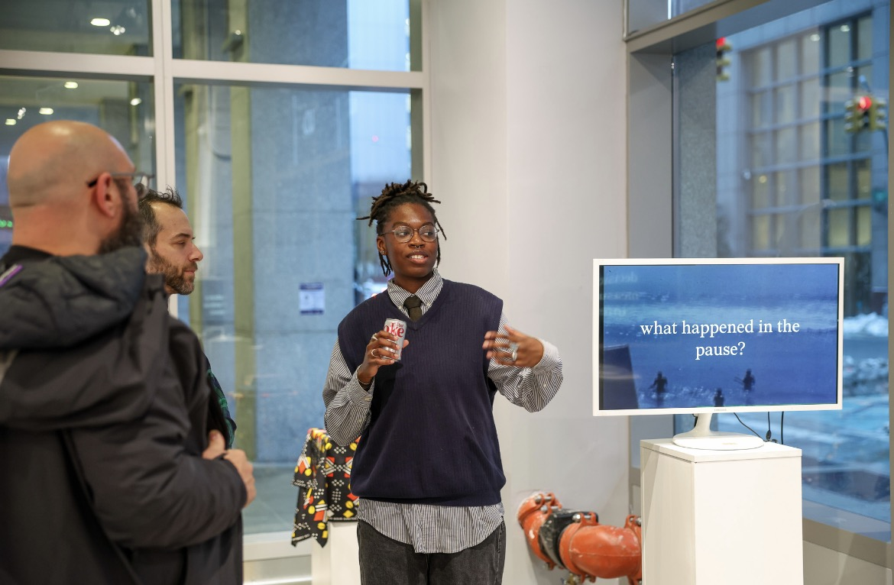
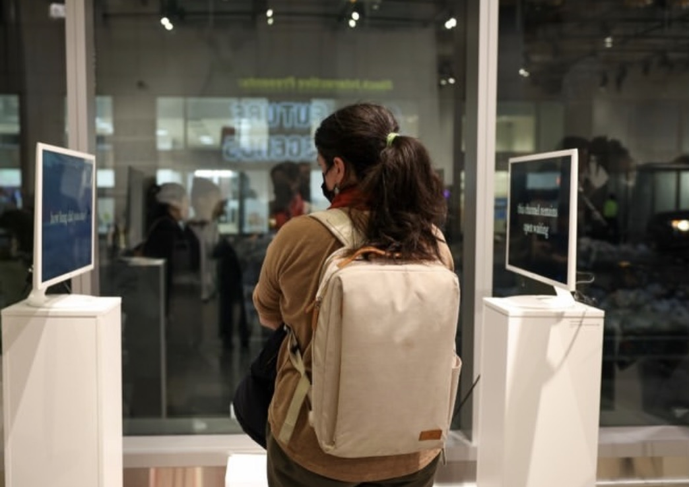

Online our behavior and attention is captured with the aim of predicting our desires and futures, rendering us as algorithmic approximations of behavior. In turn, we are encouraged to use these machines to help us remember through recording, notetaking, bookmarking, etc. Inspired by the Pan-Africanist tradition of the Sankofa bird (reflecting on the past to inform the future), African divination practices, and the legacy of Toni Morrison’s concept of rememory, this installation invites viewers to reorient their relationship with the browser itself towards a place of imagined possibilities.


In a gesture that mimicks crane of the Sankofa bird, visitors look back and forth between two screens, one displaying critiques or provocations about rememory and their relationship with the past, and another prompting them to reflect on the future.
along with the installation was a limited print companion zine that explores a psychoanalytical approach to understanding how desire is uniquely experienced and captured in cyberspace.